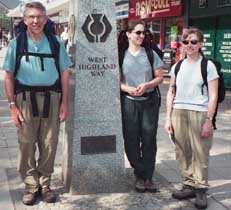

Milngavie to Drymen - Friday, May 24
Having spent the previous night in Glasgow, we took the twenty minute train ride to Milngavie, a suburb of Glasgow, for the start of the walk. We had decided to have two duffle bags carried by a luggage transport service, so that we all had light packs to carry. We left our bags with the Travel-lite people, shopped for sandwiches for lunch and some other odds and ends, posed for a photo at the starting obelisk, and set off.
The first part wound through pleasant park land. We had to work our way through and past a large walking group that had started out just ahead of us. Penny enjoyed chatting with them. We saw them off and on for several days. After crossing a major road, we had our first encounter with a bucket of disinfectant, put there for walkers to clean their boots and rid them of foot and mouth disease contamination. There was a stretch called "Tinker's Loan", an old lane, now grassy.
We had hoped to stop in for a tour of the Glengoyne Distillery, which is in sight across a field. But signs had said that we should stay on the path, and to get to the distillery we would have had to cross a field with sheep, so we thought that we shouldn't. Great sadness. But after not too long we came to the Beach Tree Inn, where we had cold, refreshing drinks. Thann and Alida particularly liked their St. Andrews Ale. We lingered there, since we had already finished 2/3 of the mileage for the day, and it was only noon.
A funny episode occurred while we ate our lunch. We were sitting up on a concrete structure, one of many similar ones along this stretch of former railway line. A cow behind us started approaching, and Penny recalled the fact that Thann seems to have a remarkable magnetism for cows. Then we all suddenly noticed a herd of cows on a far away hilltop as they started moving toward us. They began gathering speed, and soon were crashing into each other in their great rush to come to us! We were very glad that there was a fence between them and us! They stood leaning against the fence for a good while before sadly leaving. We were sorry to disappoint them!
We arrived at Gateside Lodge near Drymen just as it started raining. No one was home, as it was still early afternoon, but there was a bench in front of the house under an eave; we sat and read guidebooks while we waited. After a while, a couple of young schoolboys walked by up the lane, stopped, and called back to an unseen friend "You've got walkers!", making it sound like some sort of disease. A few minutes after that, a shy little boy opened the front door and invited us in, to sit in the living room and wait for his mother. Not much later, she arrived and showed us our rooms. We felt quite content and comfortable there. For dinner, we walked the half-mile to Drymen, and ate at the Clachan Inn, said to be the oldest licensed pub in Scotland. We were at a table beside a threesome of English walkers of about Thann's and my age, whom we saw off and on for the rest of the walk.
| Next Day | Home Page |